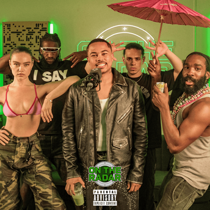
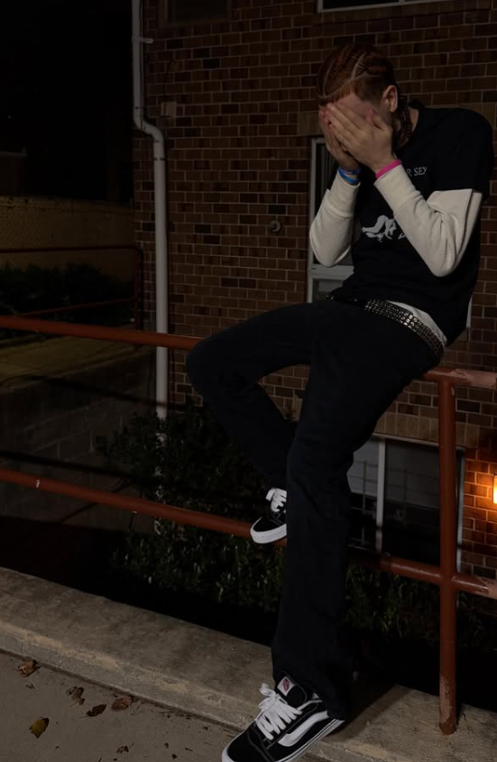
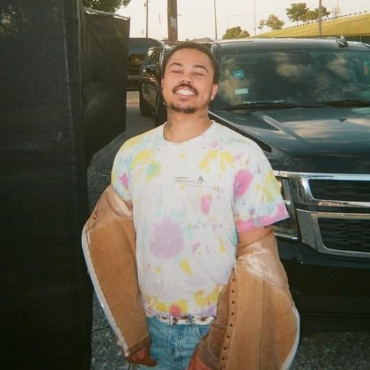
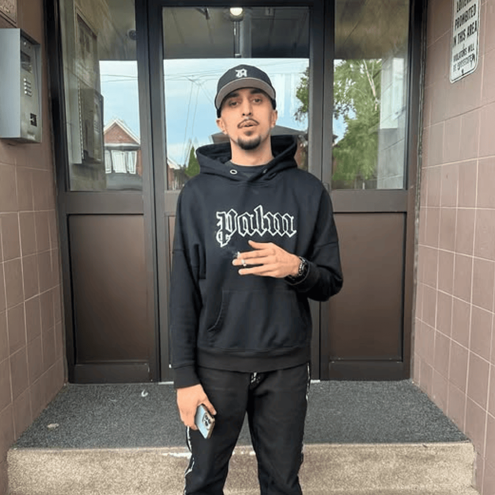
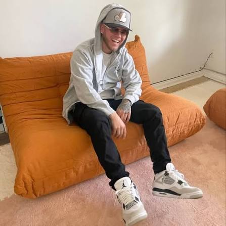

Мене звати Роман Немчицький, мені 19 років. Я навчаюсь за спеціальністю «Комп'ютерна інженерія».
З самого дитинства я люблю слухати музику. Мені завжди було цікаво, як вона пишеться й робиться, а також дивитися на цікавих і творчих людей. У 2019 році я вперше спробував програму FL Studio, але нічого путнього не виходило. Проте вже за рік я вирішив у ній розібратися. Сам процес написання музики приносить задоволення, а найцікавіше — це нові знайомства.
У 2022 році я познайомився з хлопцем, який також пише музику (біти), і відтоді ми спілкуємося: він підтримує мене, а я його. Влітку 2025 року він спродюсував трек для артиста Adamn Killa. Adamn Killa виконав його на On The Radar Freestyle, а згодом випустив кліп на цю композицію («Narcissist»).

У 2024 році я познайомився з канадським продюсером DT Beats, який дуже мене мотивував і не раз кидав мені респект :) (я це дуже ціную). Також у 2024 році я познайомився з канадським репером J Bish: на стрімі в DT Beats я скинув на оцінку біт, і J Bish одразу зайшов на нього з фристайлом. Це був мій перший спродюсований трек. Відео з цим фристайлом у TikTok набрало понад 20 тисяч переглядів, і відтоді ми з J Bish продовжуємо спілкуватися. У 2025 році я познайомився з іншими продюсерами, які мають зв'язки принаймні з Lil Uzi Vert, а саме з його другом blonkoh. Blonkoh надсилав Lil Uzi Vert наші біти, і я сподіваюся, що він хоча б їх послухав. На більше я не розраховую :)



